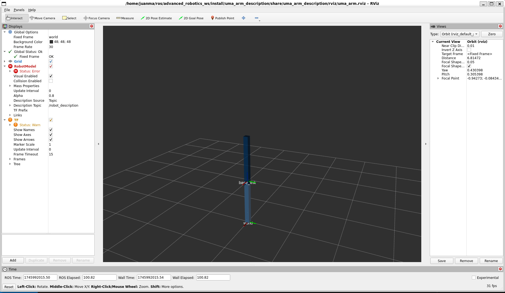
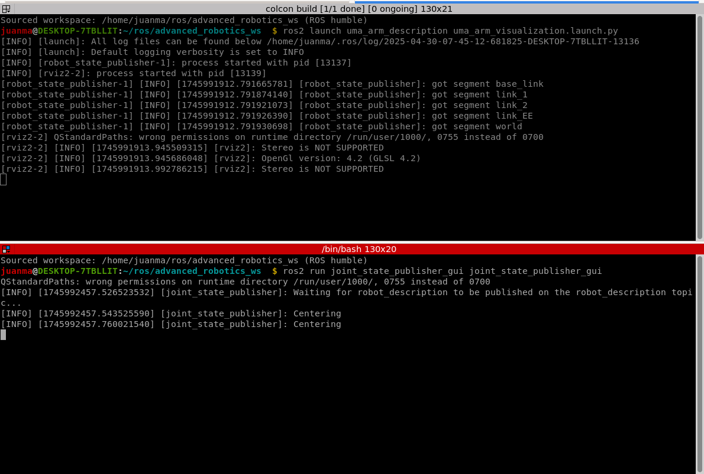
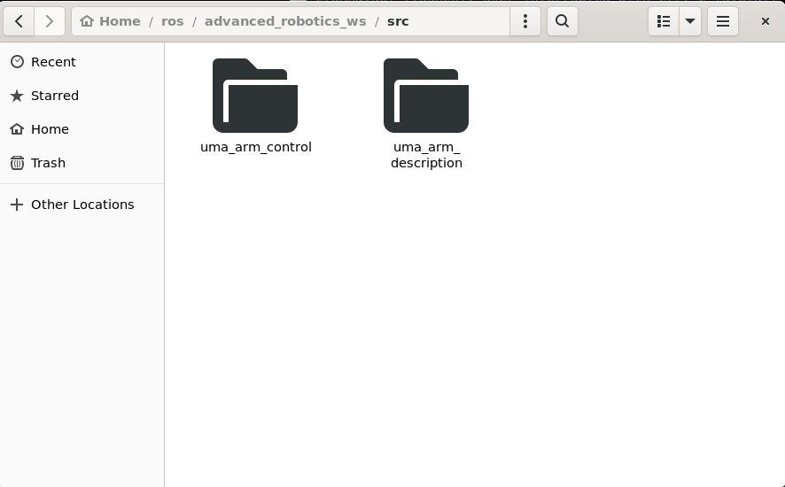
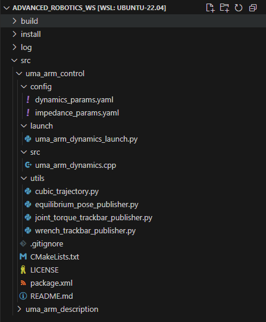
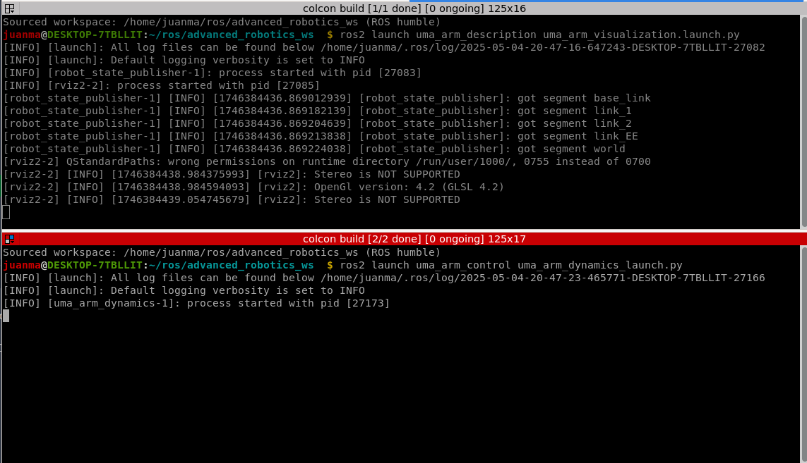
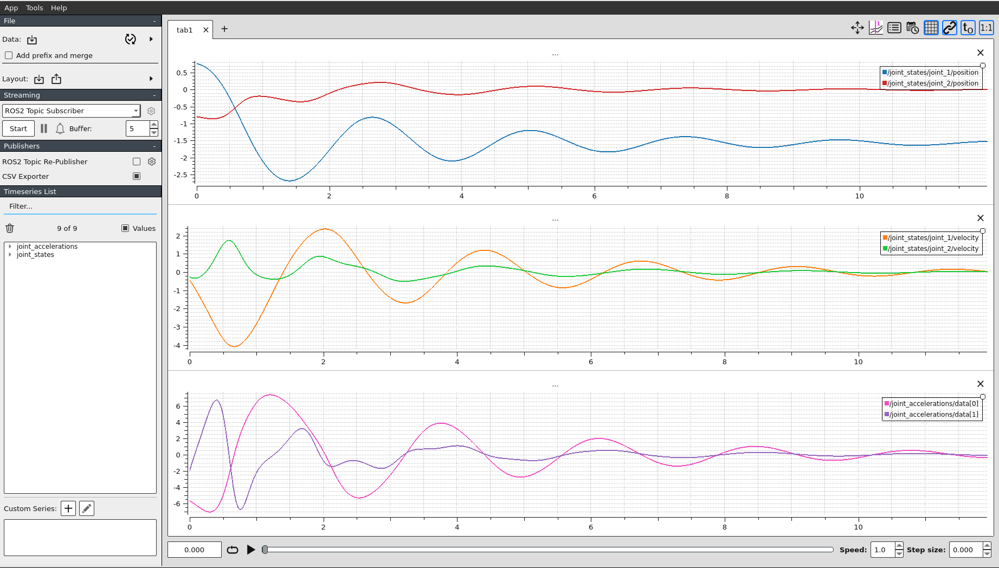
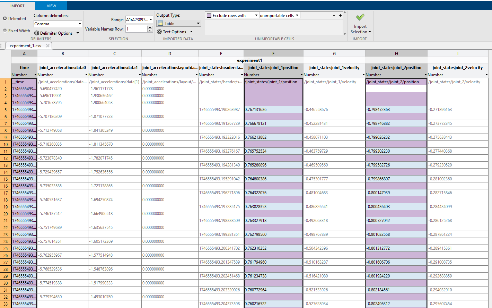
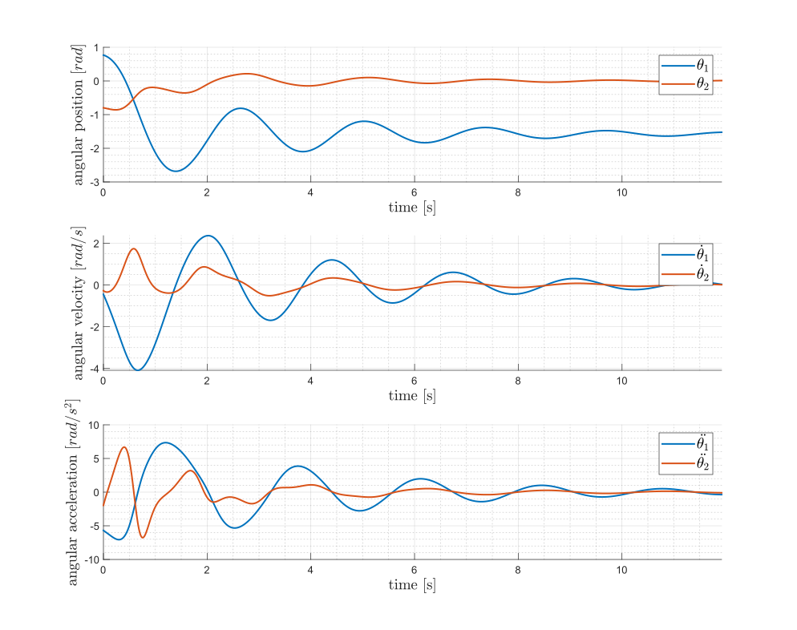

Lab 2: Manipulator dynamics simulation¶
1. Setup ROS 2¶
For this lab session we will use ROS 2 Humble.
You'll need to install the uma_environment_tools as it will install ROS2 Humble, and some important packages and libraries that we'll use in the course. In that repo, you'll find the required steps to install it.
If you already have a native version of Ubuntu 22.04 installed, you can skip steps 1 and 2.
A video of the installation, including the troubleshooting (if you don't find the errors, you don't need to run that part!) is shown below. Note that the video shows the installation with WSL. If you're using a native Ubuntu 22.04, you can skip the first instruction.
1.1. Testing the UMA environment¶
Once you have installed the UMA environment, you should see that everything is working correctly.
Try the following;
Put the name advanced_robotics_ws to your workspace.
If, after installing it, you go to your catkin workspace folder and when you run this alias
you find an error like 'ROS colcon build is not installed', then you'll need to uninstall ros and install the environment again:
sudo apt remove ~nros-humble-* && sudo apt autoremove
sudo rm /etc/apt/sources.list.d/ros2.list
sudo apt update
sudo apt autoremove
# Consider upgrading for packages previously shadowed.
sudo apt upgrade
cd ~/uma_environment_tools/scripts
./install_uma_environment.sh
Then you'll ned to run
2. Install UMA manipulator package¶
You'll need to clone the uma_arm_description repository inside
Warning
This is a work-in-progress repository. Don't pay attention to the README.md file of that repo.
Info
You don't have to modify anything in this package. You just need it visualize the manipulator.
Now, before compiling it, you'll need to install a series of dependencies:
sudo apt install ros-${ROS_DISTRO}-xacro
sudo apt install ros-${ROS_DISTRO}-gazebo-ros-pkgs
sudo apt install ros-${ROS_DISTRO}-ros2-control ros-${ROS_DISTRO}-ros2-controllers ros-${ROS_DISTRO}-gazebo-ros2-control
sudo apt-get install -y ros-${ROS_DISTRO}-joint-state-publisher-gui ros-${ROS_DISTRO}-rviz2
If you find an error trying to install these dependencies, most probably you'll need to update the packages repositories and upgrade them to the last version
Once the dependencies are correctly installed, you can compile the workspace
2.1. Test the UMA manipulator package¶
Open one terminal and run:
You'll see RViz2 openning and showing the following:

You can open a new terminal and run the joint_state_publisher_guito move joints of the robot
Tip
If you press ctrl + shift + o or ctrl + shift + e in the terminator terminal, it will split the terminals vertically or horizontally
Now, you should have the following in your terminals

A GUI should have opened now allowing you to manually drive the joints of the manipulator
Success
Great work! Now you are ready to do the Lab session 2!
You can also close all the terminals (press ctrl + c).
3. Simulate the robot dynamics¶
The manipulator model you've loaded is purely a kinematic visualization (i.e., there is no dynamics - no forces, and there is no simulation)
Info
RViz 2 is 3D visualization tool, not a simulator. It means it allows you to see the robot models, sensor data, and other information shared in your ROS 2 environment in real-time and offers you a GUI to select the information to be visualize, but it is NOT a simulation
There are different ways to simulate the dynamics. The (probably) most straightforard one is to use a simulator as Gazebo. However, as we are roboticists and want to see, touch, and learn the intrinsic effects of the dynamics of the robotic manipulator, we'll code the dynamics (the equations of motion) of the manipulator down into a node.
3.1. Clone the uma_arm_control package¶
To do this, we'll work with another package. You have to do the following
Once you have done this, your workspace folder should look like this

Tip
You can open the Ubuntu file manager even if you're using WSL running nautilus in a terminal
Now you can compile your workspace
Success
Great work! You're now ready to implement the manipulator dynamics
But first, let's have a look at the uma_arm_control package distribution
3.2. Understanding the uma_arm_control package¶
The package is structured as shown in the following image

Tip
You can directly open VSCode inside WSL by running code in a terminal
-
config
This folder contains configuration files that define various parameters.
- dynamics_params.yaml: This file contains parameters related to the dynamics of the robotic arm. You need to modify it in this lab.
- impedance_params.yaml: This file includes parameters for the impedance controller.
 You'll need to modify it in future sessions.
You'll need to modify it in future sessions.
-
launch
This folder contains launch scripts.
- uma_arm_dynamics_launch.py: This Python script launches the dynamics simulation node for the robotic arm.
 You don't have to modify it.
You don't have to modify it.
- uma_arm_dynamics_launch.py: This Python script launches the dynamics simulation node for the robotic arm.
-
src
This folder contains the source code for the dynamics control and simulation of the robotic arm:
- uma_arm_dynamics.cpp: This C++ file contains the implementation of the dynamics equations (equations of motion) for the robotic arm. You need to modify it in this lab.
-
utils: This folder contains utility scripts that provide additional functionalities for the labs.
You don't have to modify it. - .gitignore: Specifies which files and directories should be ignored by Git version control. You don't have to modify it.
- CMakeLists.txt: Contains instructions for building the project using CMake, a build system generator. You'll need to modify it in future sessions.
- LICENSE: The license file that specifies the terms under which the project can be used and distributed. You don't have to modify it.
- package.xml: Defines the package metadata for ROS, including dependencies and other information. You don't have to modify it.
- README.md: Provides an overview of the project, instructions for setup, usage, and other relevant information. You should modify it and keep it updated as you work on the lab sessions.
3.3. Understanding the uma_arm_dynamics.cpp code¶
3.3.1. Libraries ¶
Includes the needed libraries. You don't have to modify it.
Show the code
3.3.2. Constructor ¶
ManipulatorDynamicsNode: Inherits from rclcpp::Node, making it a ROS 2 node. The class ManipulatorDynamicsNode is a ROS 2 node responsible for computing the dynamics of the manipulator (robot arm). You don't have to modify it.
ManipulatorDynamicsNode(): Class constructor that Initializes the node with the name manipulator_dynamics_node.
Show the code
class ManipulatorDynamicsNode : public rclcpp::Node
{
public:
ManipulatorDynamicsNode()
: Node("manipulator_dynamics_node"),
joint_positions_(Eigen::VectorXd::Zero(2)),
joint_velocities_(Eigen::VectorXd::Zero(2)),
joint_accelerations_(Eigen::VectorXd::Zero(2)),
joint_torques_(Eigen::VectorXd::Zero(2)),
external_wrenches_(Eigen::VectorXd::Zero(2)),
previous_time_(high_resolution_clock::now())
{
// Frequency initialization
this->declare_parameter<double>("frequency", 1000.0);
// Dynamics parameters initialization
this->declare_parameter<double>("m1", 1.0);
this->declare_parameter<double>("m2", 1.0);
this->declare_parameter<double>("l1", 1.0);
this->declare_parameter<double>("l2", 1.0);
this->declare_parameter<double>("b1", 1.0);
this->declare_parameter<double>("b2", 1.0);
this->declare_parameter<double>("g", 9.81);
this->declare_parameter<std::vector<double>>("q0", {0, 0});
// Get frequency [Hz] parameter and compute period [s]
double frequency = this->get_parameter("frequency").as_double();
// Get dynamic parameters
m1_ = this->get_parameter("m1").as_double();
m2_ = this->get_parameter("m2").as_double();
l1_ = this->get_parameter("l1").as_double();
l2_ = this->get_parameter("l2").as_double();
g_ = this->get_parameter("g").as_double();
b1_ = this->get_parameter("b1").as_double();
b2_ = this->get_parameter("b2").as_double();
// Set initial joint position
joint_positions_ = Eigen::VectorXd::Map(this->get_parameter("q0").as_double_array().data(), 2);
Member variables initialization
joint_positions_,joint_velocities_,joint_accelerations_,joint_torques_,external_wrenches_: These are Eigen vectors initialized to zero. We'll use the library Eigen to work with vectors and matrices in C++.previous_time_: Initialized to the current time using high_resolution_clock::now().
Parameters declaration
frequency: The frequency at which the node operates (default 1000 Hz).m1,m2: Masses of the manipulator's links.l1,l2: Lengths of the manipulator's links.b1,b2: Damping coefficients.g: Gravitational acceleration.q0: Initial joint positions.
Parameters Retrieval
get_parameter: Retrieves the values of the declared parameters and assigns them to member variables. The values of the parameters are defined in thedynamics_params.yamlfile inside the config folder.
Setting Initial Joint Positions
joint_positions_: Sets the initial joint positions using the parameter q0.
Show the code
// Create subscription to joint_torques
joint_torques_subscription_ = this->create_subscription<std_msgs::msg::Float64MultiArray>(
"joint_torques", 1, std::bind(&ManipulatorDynamicsNode::joint_torques_callback, this, std::placeholders::_1));
// Create subscription to external wrenches
external_wrenches_subscription_ = this->create_subscription<geometry_msgs::msg::Wrench>(
"external_wrenches", 1, std::bind(&ManipulatorDynamicsNode::external_wrenches_callback, this, std::placeholders::_1));
// Create publisher for joint acceleration
publisher_acceleration_ = this->create_publisher<std_msgs::msg::Float64MultiArray>("joint_accelerations", 1);
// Create publisher for joint state
publisher_joint_state_ = this->create_publisher<sensor_msgs::msg::JointState>("joint_states", 1);
// Set the timer callback at a period (in milliseconds, multiply it by 1000)
timer_ = this->create_wall_timer(
std::chrono::milliseconds(static_cast<int>(1000 / frequency)), std::bind(&ManipulatorDynamicsNode::timer_callback, this));
}
Subscriptions
joint_torques_subscription_: Subscribes to thejoint_torquestopic, which is expected to publish messages of typestd_msgs::msg::Float64MultiArray. The callback functionjoint_torques_callbackis bound to handle incoming messages.external_wrenches_subscription_: Subscribes to theexternal_wrenchestopic, which is expected to publish messages of type-geometry_msgs::msg::Wrench. The callback functionexternal_wrenches_callbackis bound to handle incoming messages.
Publishers
publisher_acceleration_: Creates a publisher for thejoint_accelerationstopic, which will publish messages of typestd_msgs::msg::Float64MultiArray.publisher_joint_state_: Creates a publisher for thejoint_statestopic, which will publish messages of typesensor_msgs::msg::JointState.
Timer
timer_: Sets up a timer that triggers thetimer_callbackfunction (explained below) at a period determined by the frequency parameter. The period is expected to be given in milliseconds, therefore, it is calculated as
3.3.3. Timer callback ¶
The timer_callback function is responsible for:
- Calculating the
elapsed_time_between callbacks. - Updating the new
joint_accelerations_,joint_velocities_, andjoint_positions_using the respective functions (you'll need to implement these functions later). - Publishing the updated joint states to the ROS topics.
This function ensures that the manipulator's state is updated and communicated at regular intervals based on the timer's frequency.
Show the code
// Timer callback - when there is a timer callback, computes the new joint acceleration, velocity and position and publishes them
void timer_callback()
{
// Get the actual elapsed time
auto current_time = high_resolution_clock::now();
elapsed_time_ = duration_cast<duration<double>>(current_time - previous_time_).count();
previous_time_ = current_time;
// Calculate JointState
joint_accelerations_ = calculate_acceleration();
joint_velocities_ = calculate_velocity();
joint_positions_ = calculate_position();
// Publish data
publish_data();
}
3.3.4. Topic callbacks ¶
These callback functions ensure that the node's state is updated with the latest data from the subscribed topics. Specifically:
joint_torques_callback: Updates thejoint_torques_based on incoming messages.external_wrenches_callback: Updates theexternal_wrenches_based on incoming messages.
Show the code
private:
// Subscription callback - when a new message arrives, updates joint_torques_
void joint_torques_callback(const std_msgs::msg::Float64MultiArray::SharedPtr msg)
{
joint_torques_ = Eigen::VectorXd::Map(msg->data.data(), msg->data.size());
}
// Subscription callback - when a new message arrives, updates external_wrenches_
void external_wrenches_callback(const geometry_msgs::msg::Wrench::SharedPtr msg)
{
auto forces = msg->force;
external_wrenches_(0) = forces.x;
external_wrenches_(1) = forces.y;
}
3.3.5. Calculate acceleration ¶
This method computes the joint_accelerations_ of the manipulator by considering the equations of motion, including inertia, Coriolis and centrifugal forces, friction, gravitational forces, and external torques. You have to implement it as explained later.
At the moment, the method returns \(\mathbf{\ddot{q}} = [0, 0]\).
Show the code
// Method to calculate joint acceleration
Eigen::VectorXd calculate_acceleration()
{
// Initialize M, C, Fb, g_vec, J, and tau_ext
// Initialize q1, q2, q_dot1, and q_dot2
// Placeholder calculations for M, C, Fb, g, and tau_ext
// Calculate matrix M
// Calculate vector C (C is 2x1 because it already includes q_dot)
// Calculate Fb matrix
// Calculate g_vect
// Calculate J
// Calculate tau_ext
// Calculate joint accelerations using the dynamic model: q'' = M^(-1)[tau - C(q,q')q' - Fbq' - g(q) + tau_ext]
Eigen::VectorXd q_ddot(2);
q_ddot << 0, 0;
// Return joint accelerations
return q_ddot;
}
3.3.6. Integrate position and velocity ¶
This method computes the joint velocities and positions by integrating over the elapsed time. You have to implement it as explained later.
At the moment, the methods return \(\mathbf{\dot{q}} = \mathbf{q} = [0, 0]\).
Show the code
// Method to calculate joint velocity
Eigen::VectorXd calculate_velocity()
{
// Placeholder for velocity calculation
// Integrate velocity over the time step (elapsed_time_)
Eigen::VectorXd q_dot(2);
q_dot << 0, 0;
return q_dot;
}
// Method to calculate joint position
Eigen::VectorXd calculate_position()
{
// Placeholder for position calculation
// Integrate position over the time step (elapsed_time_)
Eigen::VectorXd q(2);
q << 0, 0;
return q;
}
3.3.7. Publish the data ¶
This method is responsible for publishing the computed joint_accelerations_ and joint_state (joint_positions_ and joint_velocities_) to their respective topics.
Show the code
// Method to publish the joint data
void publish_data()
{
// publish joint acceleration
auto acceleration_msg = std_msgs::msg::Float64MultiArray();
acceleration_msg.data.assign(joint_accelerations_.data(), joint_accelerations_.data() + joint_accelerations_.size());
publisher_acceleration_->publish(acceleration_msg);
// publish joint state
auto joint_state_msg = sensor_msgs::msg::JointState();
joint_state_msg.header.stamp = this->get_clock()->now();
joint_state_msg.name = {"joint_1", "joint_2"}; // Replace with actual joint names
joint_state_msg.position = {joint_positions_(0), joint_positions_(1)};
joint_state_msg.velocity = {joint_velocities_(0), joint_velocities_(1)};
publisher_joint_state_->publish(joint_state_msg);
}
3.3.8. Member variables¶
Defines the member variables for the ManipulatorDynamicsNode class. Here's a detailed breakdown of these variables: Member Variables
Show the code
// Member variables
// Publishers and subscribers
rclcpp::Subscription<std_msgs::msg::Float64MultiArray>::SharedPtr joint_torques_subscription_;
rclcpp::Subscription<geometry_msgs::msg::Wrench>::SharedPtr external_wrenches_subscription_;
rclcpp::Publisher<std_msgs::msg::Float64MultiArray>::SharedPtr publisher_acceleration_;
rclcpp::Publisher<sensor_msgs::msg::JointState>::SharedPtr publisher_joint_state_;
rclcpp::TimerBase::SharedPtr timer_;
// Joint variables
Eigen::VectorXd joint_positions_;
Eigen::VectorXd joint_velocities_;
Eigen::VectorXd joint_accelerations_;
Eigen::VectorXd joint_torques_;
Eigen::VectorXd external_wrenches_;
// dynamic parameters variables
double m1_;
double m2_;
double l1_;
double l2_;
double b1_;
double b2_;
double g_;
// Variable to store the previous callback time and elapsed time
time_point<high_resolution_clock> previous_time_;
double elapsed_time_;
};
Publishers and Subscribers
joint_torques_subscription_: Subscription to the "joint_torques" topic.external_wrenches_subscription_: Subscription to the "external_wrenches" topic.publisher_acceleration_: Publisher for the "joint_accelerations" topic.publisher_joint_state_: Publisher for the "joint_states" topic.
Joint Variables
joint_positions_: Eigen vector representing the positions of the joints (\(\mathbf{q}\)).joint_velocities_: Eigen vector representing the velocities of the joints (\(\mathbf{\dot{q}}\)).joint_accelerations_: Eigen vector representing the accelerations of the joints (\(\mathbf{\ddot{q}}\)).joint_torques_: Eigen vector representing the torques applied to the joints (\(\boldsymbol{\tau}\)).external_wrenches_: Eigen vector representing the external forces and torques applied to the EE (\(\mathbf{F}_{ext}\)).
Dynamic Parameters Variables
m1_: Mass of the first link of the manipulator.m2_: Mass of the second link of the manipulator.l1_: Length of the first link of the manipulator.l2_: Length of the second link of the manipulator.b1_: Damping coefficient for the first joint.b2_: Damping coefficient for the second joint.g_: Gravitational acceleration.
Time Variables
timer_: Timer that triggers the timer_callback function at a specified frequency.previous_time_: Stores the time of the previous callback execution.elapsed_time_: Stores the elapsed time between the current and previous callback executions (\(\Delta t\)).
3.3.9. Main¶
Initializes the ROS 2 node, creates a shared pointer to an instance of the ManipulatorDynamicsNode class, keeps the node running, and shuts down the ROS 2 node when the node execution finishes.
Show the code
3.4. Implementing the dynamics model¶
The dynamics of an open kinematic chain robotic manipulator is given by
where
- \(\mathbf{q} \in \mathbb{R}^{n \times 1}\) is the vector of joint positions (
joint_positions_). - \(\dot{\mathbf{q}} \in \mathbb{R}^{n \times 1}\) is the vector of joint velocities (
joint_velocities_). - \(\ddot{\mathbf{q}} \in \mathbb{R}^{n \times 1}\) is the vector of joint accelerations (
joint_accelerations_). - \(\mathbf{M}(\mathbf{q}) \in \mathbb{R}^{n \times n}\) is the inertia matrix.
- \(\mathbf{C}(\mathbf{q}, \dot{\mathbf{q}}) \in \mathbb{R}^{n \times n}\) is the Coriolis and centrifugal forces matrix.
- \(\mathbf{F}_b \in \mathbb{R}^{n \times n}\) is the viscous friction matrix.
- \(\mathbf{g} \in \mathbb{R}^{n \times 1}\) is the viscous friction matrix.
- \(\boldsymbol{\tau} \in \mathbb{R}^{n \times 1}\) is the vector of commanded joint torques (
joint_torques_). - \(\boldsymbol{\tau}_{ext} \in \mathbb{R}^{n \times 1}\) is the vector of joint torques due to external forces.
In our case, as we have a 2 DoF manipulator, \(n=2\).
Hence, the acceleration due to applied torques is given by
To calculate the joint accelerations, we first need to compute the matrices. They can be computed applying the Lagrange or the Newton-Euler formulations. In our case, the matrices are defined by:
We'll also need to compute the jacobian to include the external wrenches applied at the EE in our model
Then, we can calculate \(\boldsymbol{\tau}_{ext}\) as
We can now code them as
// Initialize M, C, Fb, g_vec, J, and tau_ext
Eigen::MatrixXd M(2, 2);
Eigen::VectorXd C(2);
Eigen::MatrixXd Fb(2, 2);
Eigen::VectorXd g_vec(2);
Eigen::MatrixXd J(2, 2);
Eigen::VectorXd tau_ext(2);
// Initialize q1, q2, q_dot1, and q_dot2
double q1 = joint_positions_(0);
double q2 = joint_positions_(1);
double q_dot1 = joint_velocities_(0);
double q_dot2 = joint_velocities_(1);
// Placeholder calculations for M, C, Fb, g, and tau_ext
// Calculate matrix M
M(0, 0) = m1_ * pow(l1_, 2) + m2_ * (pow(l1_, 2) + 2 * l1_ * l2_ * cos(q2) + pow(l2_, 2));
M(0, 1) = m2_ * (l1_ * l2_ * cos(q2) + pow(l2_, 2));
M(1, 0) = M(0, 1);
M(1, 1) = m2_ * pow(l2_, 2);
// Calculate vector C (C is 2x1 because it already includes q_dot)
C << -m2_ * l1_ * l2_ * sin(q2) * (2 * q_dot1 * q_dot2 + pow(q_dot2, 2)),
m2_ * l1_ * l2_ * pow(q_dot1, 2) * sin(q2);
// Calculate Fb matrix
Fb << b1_, 0.0,
0.0, b2_;
// Calculate g_vect
g_vec << (m1_ + m2_) * l1_ * g_ * cos(q1) + m2_ * g_ * l2_ * cos(q1 + q2),
m2_ * g_ * l2_ * cos(q1 + q2);
// Calculate J
J << -l1_ * sin(q1) - l2_ * sin(q1 + q2), -l2_ * sin(q1 + q2),
l1_ * cos(q1) + l2_ * cos(q1 + q2), l2_ * cos(q1 + q2);
// Calculate tau_ext
tau_ext << J.transpose() * external_wrenches_;
// Calculate joint acceleration using the dynamic model: M * q_ddot = torque - C * q_dot - Fb * joint_velocities_ - g + tau_ext
Eigen::VectorXd q_ddot(2);
q_ddot << M.inverse() * (joint_torques_ - C - Fb * joint_velocities_ - g_vec + tau_ext);
return q_ddot;
Tip
I suggest you use VSCode and install the C/C++ Themes extension. Once installed, you can auto format the code (usually by pressing ctrl + shift + i)
As we are implementing a discrete system:
we can get the joint velocities and position by discrete integration over time as
We can now code them as
// Method to calculate joint velocity
Eigen::VectorXd calculate_velocity()
{
// Placeholder for velocity calculation
// Integrate velocity over the time step (elapsed_time_)
Eigen::VectorXd q_dot = joint_velocities_ + joint_accelerations_ * elapsed_time_;
return q_dot;
}
// Method to calculate joint position
Eigen::VectorXd calculate_position()
{
// Placeholder for position calculation
// Integrate position over the time step (elapsed_time_)
Eigen::VectorXd q = joint_positions_ + joint_velocities_ * elapsed_time_;
return q;
}
4. Launch the dynamics simulator node¶
Once you have coded the dynamics, open a terminal and compile it:
Success
Great! You've coded the manipulator dynamics and are now ready to launch the node to see how they work.
First, you'll need to launch the UMA manipulator (step 2.1.).
Hence, you will need to open 2 terminals and launch the following:
Terminal 1¶
Launch the UMA manipulator model uma_arm_visualization.launch.py:
Terminal 2¶
Launch the dynamics model uma_arm_dynamics_launch.py:
Hence, you should see the following

And the result of the simulation is
Tip
- Note that the order when launching the scripts is important. You should first launch the
uma_arm_visualization. By doing this, the robot model is loaded but it doesn't do anything until there's a message published in the topic/joint_state. - Then you can launch the
uma_arm_dynamics. This is what the dynamics model does: Computes the dynamic model, and publishes the joint state to update the visualization. Note also that the dynamics node doesn't need the uma_arm_visualization to work. If you only launch the dynamics, they're computed without showing them in the uma_arm_visualization. If you run the visualization after launching the
You can see the interaction between topics and nodes by openning another terminal and running
You have to select the option Node/Topics (all) and then update the graph.

5. Graphical representation¶
As robotics engineers, just seeing things work isn't enough for us. We want to understand how they work and be able to measure every parameter. One of the best ways to record the data of an experiment in ROS is to use ros bags.
To record the data of the experiment, you can do the following:
-
If you want to be organized, you can create an experiments folder to store the data there:
-
Open a terminal and start the rosbag recording:
-
Open another terminal and launch the UMA manipulator model:
-
Open another terminal and launch the dynamics model
uma_arm_dynamics_launch.py:
When the experiment is finished (let's say, after around 15 seconds - when the manipulator is more or less steady) you can stop it by cancel the recording and killing the nodes.
To represent time series of data in ROS 2, the uma_environment has installed the tool plotjuggler. You can find more information on how to use plotjuggler in this video.
You can run it by using the correspongind UMA environment alias
Inside plotjuggler, and following the steps in the previous video, you can play the recorded rosbag. If you use the layout in pos_vel_acc_layout.xml, you can plot the joint position, velocities, and accelerations.

Question
What are the effects of modifying the dynamics parameters of the arm?
You can modify some of the following parameters inside the dynamics_params.yaml: m1, m2, b1, b2, and g.
Run different experiments and plot the data to see the effects of those parameters.
Note that you only need to modify those inside uma_arm_dynamics.
Optional - Nice plots and vector images¶
Plotjuggler is an excellent tool to visualize ROS topics data, and it also gives you some options to manipulate the data. However, sometimes you'll like to use a more powerful tool to manipulate the data such as matlab or python (with matplotlib).
Plotjuggler allows you to save the data in csv format. This way, you can easily import the data with your preferred software to plot it. Below is an expample:
-
Click on the CSV exporter and export the data (export the data range into a file).

-
Go to matlab, open the CSV file and select the data you want to get. In the figure below you can see how I select the time stamp (column A), and the joint position data of joint 1 (column F) and joint 2 (column H). Don't forget to exclude the rows with uninmportable cells. Then, select Import selection as Generate Script to generate a script that

-
You'll probably need to modify that script to change CSV location or the name of the variable that will store your data.
-
Repeat these steps as much as you need it to get the data you want to plot. Here I give you the matlab scripts to get the joint, velocity, and acceleration data, respectively.
-
Once you have the data in matlab, you can manipulate it the way you want. For example, you can create nicer plots with the units and names in the axes. Here I give you the script to create a nice plot with the experiment data.
-
You can also export the figures in a vectorial graphic format such as PDF to have the best resolution possible, such as this one:

An alternative to this is to directly use the ROS toolbox in Matlab to get the rosbag recorded data. But I'd rather export it with PlotJuggler.